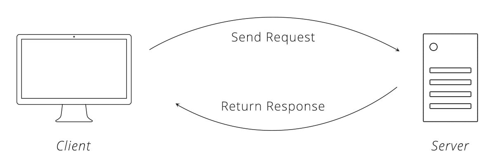

Warning: package 'jsonlite' was built under R version 4.3.311 Web Application Programming Interfaces (Web APIs)
Abstract
Many data providers allow public access to data through APIs. Understanding how these work and how to use R to call and gather data from APIs is an important skill for a data scientist.
11.1 API Background
Application Programming Interface (API)
An Application Programming Interface (API) is a set of functions for programmatically accessing and/or processing data. Packages like library(dplyr) and library(ggplot2) have APIs that were carefully designed to be approachable. The dplyr website says, “dplyr is a part of the tidyverse, an ecosystem of packages designed with common APIs and a shared philosophy.”
Web API
A web API is a way to interact with web-based software through code - usually to retrieve data or use a tool. We will only focus on web APIs in this tutorial. To use web APIs, actions between computers and web applications are typically communicated through URLs that are passed between the computers. Manipulating URLs is key to using web APIs.
11.2 Popular Web APIs
11.3 Why APIs?
11.3.1 Why use APIs?
- The data or method is only available through an API: Census data and IPEDS are available through point-and-click interfaces and APIs, but many data and methods are only available through APIs. For example, data from the GoogleMaps API and methods from the Stanford CoreNLP software are only available in R through APIs.
- APIs promote reproducibility: Even with good documentation, pointing-and-clicking is tough to reproduce. APIs are useful for writing code to access data in an analysis before processing, modeling, and/or visualizing.
- APIs enable scalability: It’s simple to point-and-click data for one state or one county. It’s much tougher to point-and-click state or county level data if the data are stored in separate files. APIs can be accessed programtically, which means anything can be iterated to scale.
11.3.2 Why build APIs?
- APIs enable scalability: APIs enable scalability for data or methods creators. For example, the Urban Institute builds data visualization applications like Explore Your School’s Changing Demographics on top of APIS.
- APIs create standardization: APIs standardize the communication between applications. By creating a protocol for a store of data or a model, it makes it simpler for downstream applications to access the data or methods of upstream applications.
- Democratize access to data or methods: Centralized storage and processing on the cloud are cheaper than personal computing on desktops and laptops. APIs allow users to access subsets of data or summary statistics quicker and cheaper than accessing all data and/or processing that data locally. For example, the new Urban Institute prototype summary API endpoints allow users to create summary statistics in API calls, which saves time and local storage.
11.4 Technical Background Part I
- Server: Remote computer that stores and processes information for an API. Note: This does not need to be a literal server. Many APIs are serverless and hosted in the cloud.
- Client: Computer requesting information from the API. In our cases, this is your computer.
- Hyper-Text Transfer Protocol (HTTP): Set of rules clients use to communicate with servers via the web (etiquette).
- Request: Contacting a web API with specifics about the information you wish to have returned. In general, this is built up as a URL.
- Response: A formatted set of information servers return to clients after requests.

Source: Zapier
Uniform Resource Locators (URL)
Uniform Resource Locators (URL): Text string that specifies a web location, a method for retrieving information from that web location, and additional parameters. We use these every day!
11.5 Process (without R code)
- Client builds up a URL and sends a request to a server
- Client receives a response from the server and checks for an error message
- Client parses the response into a useful object: data frame
11.5.1 REQUEST (build up a URL)
Let’s walk through an example from the Census Bureau.
- The Census Bureau API contains hundreds of distinct data sets. Copy-and-paste https://api.census.gov/data.html into your web browser to see the list of datasets and documentation. Each one of these data sets is an API resource.
- All Census Bureau API datasets are available from the same host name. Copy-and-paste https://api.census.gov/data/ into your browser (the previous link without .html). This contains information about all of the datasets in the previous link, only now the information is stored as JavaScript Object Notation (JSON) instead of HTML.
- Each dataset is accessed through a base URL which consists of the host name, the year, and the “dataset name”. Copy-and-paste https://api.census.gov/data/2014/pep/natstprc into your web browser. This returns Vintage 2014 Population Estimates: US, State, and PR Total Population and Components of Change. Each base URL corresponds to an API endpoint.
- At this point, we’re still only seeing metadata. We need to add a query string with a method and parameters. Copy-and-paste https://api.census.gov/data/2014/pep/natstprc?get=STNAME,POP&DATE_=7&for=state:* into your browser. Note the query string begins with
?, includes the get method, and includes three parameters.
11.5.2 Check for a server error in the response
- All of the URLs in part 1 were correctly specified and all of them returned results. What happens when incorrect URLs are passed to an API? Open a new browser window and copy-and-paste
https://api.census.gov/data/2014/pep/natstprc?get=STNAME,POP&DATE_=7&for=state:57Note: this call requests information for FIPs 57, which does not exist.
11.5.3 Parse the response
APIs need to return complicated hierarchical data as text. To do this, most APIs use JavaScript Object Notation (JSON).
JSON
JSON is a plain text hierarchical data structure. JSON is not JavaScript code. Instead, it’s a non-rectangular method for storing data that can be accessed by most web applications and programming languages. Lists are made with []. Objects are made with {} and contain key-value pairs. JSON is good at representing non-rectangular data and is standard on the web.
Some example JSON could be:
{
“Class name”: “Intro to Data Science”,
“Class ID”: “PPOL 670”,
“Instructors”: [“Aaron R. Williams”, “Alex C. Engler”],
“Location”: {
“Building”: “Healy Hall”
“Room”: “105”
}
}
Web APIs can also return Extensible Markup Language (XML) and HyperText Markup Language (HTML), but JSON is definitely most popular. We’ll use library(jsonlite) to parse hierarchical data and turn it into tidy data.
11.6 Technical Background Part II
- API Resource An object in an API. In our case, a resource will almost always be a specific data set.
- API endpoint The point where a client communicates with a web API.
- Method/verb: A verb that specifies the action the client wants to perform on the resource through an API endpoint:
- GET - Ask an API to send something to you
- POST - send something to an API
- HEAD, PUT, DELETE, TRACE, OPTIONS, CONNECT, PATCH
- Query string Part of a URL that assigns values to parameters. Query strings begin with
?. The general form is key=value. - Parameters: Arguments that are passed to APIs. Parameters are separated by
&. - Headers Meta-information about GET requests. We will only use the User-Agent HTTP Header.
- Body Additional information sent to the server. This isn’t important for GET requests.
- Server response code (HTTP status code)
- 100s: information responses
- 200s: success
- 300s: redirection
- 400s: client error
- 500s: server error
11.7 R example 1
Let’s walk through the example above using R. First install library(httr) and library(jsonlite) with install.packages(c("httr", "jsonlite")).
httr contains tools for working with HTTP and URLs. It contains functions for all HTTP methods including GET() and POST().
11.7.1 REQUEST (build up a URL)
Using the final URL from the above example, lets query state names and state population in July 2014 for all states, Washington, D.C., and Puerto Rico. Note, it is good practice to create the link outside of GET() because we may need to manipulate the URL string in later examples. Note that * is a wildcard character which requests data for all possible values of the parameter.
11.7.2 Check for a server error in the response
11.8 3. Parse the response
# get the contents of the response as a text string
pop_json <- content(pop_json, as = "text")
# create a character matrix from the JSON
pop_matrix <- fromJSON(pop_json)
# turn the body of the character matrix into a tibble
pop_data <- as_tibble(pop_matrix[2:nrow(pop_matrix), ],
.name_repair = "minimal")
# add variable names to the tibble
names(pop_data) <- pop_matrix[1, ]
pop_data# A tibble: 52 × 4
STNAME POP DATE_ state
<chr> <chr> <chr> <chr>
1 Alabama 4849377 7 01
2 Alaska 736732 7 02
3 Arizona 6731484 7 04
4 Arkansas 2966369 7 05
5 California 38802500 7 06
6 Colorado 5355866 7 08
7 Connecticut 3596677 7 09
8 Delaware 935614 7 10
9 District of Columbia 658893 7 11
10 Florida 19893297 7 12
# ℹ 42 more rowsParsing the response can be trickiest step. Here, the data of interest are rectangular and the JSON object is simple to parse. Sometimes, the returned object will be a complicated hierarchical structure, which will demand writing more R code.
11.9 Terms of Service of User Agents
Always read an API’s terms of service to ensure that use of the API conforms to the API’s rules.
Furthermore, it is a good idea to only run one API request at a time and to identify yourself as a user-agent in the header of the HTTP request. This is simple with user_agent() from library(httr):
11.10 Authentication
Many APIs require authentication. For example, the Census API requires a user-specific API key for all API calls. (You can sign up here) This API key is simply passed as part of the path in the HTTP request.
"https://api.census.gov/data/2014/pep/natstprc
?get=STNAME,POP&DATE_=7&for=state:*&key=your key here" There are other authentication methods, but this is most common.
It is a bad idea to share API credentials. NEVER post a credential on GitHub. A convenient solution is to use a credentials file with the library(dotenv) package as follows:
First, install the package using install.packages("dotenv") in the console and create a file called .env in the directory where your .Rproj is located. You may get a message that files starting with a “.” are reserved for the system, you should hit “ok” to proceed. You can store as many credentials as you want in this file, with each key-value pair on a new line. Note you need to hit enter after the last key-value pair so the file ends with a blank new line.
census_api_key=<key value>
Then, you can access and use credentials as follows:
Note that you may have to restart your R session to load the file. Be sure to add this .env credentials file to your .gitignore!
11.11 Pagination
A single API call could potentially return an unwieldy amount of information. This would be bad for the server, because the organization would need to pay for lots of computing power. This would also be bad for the client because the client could quickly become overwhelmed by data. To solve this issue, many APIs are paginated. Pagination is simply breaking API responses into subsets.
For example, the original example returned information for all states in the United States. When information is requested at the Census tract level, instead of returning information for the entire United States, information can only be requested one state at a time. Getting information for the entire United States will require iterating through each state.
11.12 Rate Limiting
Rate limiting is capping the number of requests by a client to an API in a given period of time. This is most relevant when results are paginated and iterating requests is necessary. It is also relevant when developing code to query an API–because a developer can burden the API with ultimately useless requests.
It is sometimes useful to add Sys.sleep() to R code, to pause the R code to give the API a break from requests between each request. Even 0.5 seconds can be the difference.
11.13 R example 2 (Advanced)
This example pulls information at the Census tract level. Because of pagination, the example requires a custom function and iterates that function using map_df() from library(purrr). It includes Sys.sleep() to pause the requests between each query.
The example pulls the estimated number of males (B01001_002E) and females (B01001_026E) in the 2018 5-year ACS for each Census tract in Alabama and Alaska.
Here are a few select columns for the 2018 5-year ACS from the Census API documentation page:
| Vintage | Dataset Name | Dataset Type | Geography List | Variable List | Group List | Examples |
|---|---|---|---|---|---|---|
| 2018 | acs>acs5>profile | Aggregate | geographies | variables | groups | examples |
11.13.1 Write a custom function
This function 1. builds a URL and requests from the API, 2. checks for a server error, and 3. parses the response
get_acs <- function(fips, credential) {
# build a URL
# paste0() is only used because the URL was too wide for the PDF
url <- str_glue(
paste0(
"https://api.census.gov/data/2018/acs/acs5",
"?get=B01001_002E,B01001_026E&for=tract:*&in=state:{fips}&key={credential}"
)
)
# use the URL to make a request from the API
acs_json <- GET(url = url)
# get the contents of the response as a text string
acs_json <- content(acs_json, as = "text")
# create a character matrix from the JSON
acs_matrix <- fromJSON(acs_json)
# turn the body of the character matrix into a tibble
acs_data <- as_tibble(acs_matrix[2:nrow(acs_matrix), ],
.name_repair = "minimal")
# add variable names to the tibble
names(acs_data) <- acs_matrix[1, ]
# pause to be polite
Sys.sleep(0.5)
return(acs_data)
}11.13.2 Create a vector of FIPs
This could be all states, districts, and territories. It’s only Alabama and Alaska for brevity.
11.13.3 Iterate the functions
map_df() iterates get_acs() along the vector of state FIPs and returns a tibble.
# load credentials
credential <- Sys.getenv("census_api_key")
# iterate the function over Alabama and Alaska
map_df(fips, .f = get_acs, credential = credential)# A tibble: 1,348 × 5
B01001_002E B01001_026E state county tract
<chr> <chr> <chr> <chr> <chr>
1 2409 2800 01 097 006501
2 5961 6372 01 097 006502
3 3098 2888 01 097 006701
4 1837 1993 01 097 006702
5 1410 1503 01 097 007201
6 1538 1136 01 097 007202
7 1586 1311 01 097 007400
8 680 705 01 097 007500
9 981 997 01 097 007600
10 537 691 01 097 007700
# ℹ 1,338 more rows11.14 R Packages
There are R packages that simplify interacting with many popular APIs. library(tidycensus) (tutorial here) and library(censusapi) (tutorial here) simplifies navigating Census documentation, checking the status code, building URLs for the Census API, and parsing JSON responses. This can save a lot of time and effort! The following code is one iteration of the advanced example from above!
Warning: package 'censusapi' was built under R version 4.3.3getCensus(
name = "acs/acs5",
vars = c("B01001_002E", "B01001_026E"),
region = "tract:*",
regionin = "state:01",
vintage = 2018,
key = credential
) %>%
as_tibble()# A tibble: 1,181 × 5
state county tract B01001_002E B01001_026E
<chr> <chr> <chr> <int> <int>
1 01 097 006501 2409 2800
2 01 097 006502 5961 6372
3 01 097 006701 3098 2888
4 01 097 006702 1837 1993
5 01 097 007201 1410 1503
6 01 097 007202 1538 1136
7 01 097 007400 1586 1311
8 01 097 007500 680 705
9 01 097 007600 981 997
10 01 097 007700 537 691
# ℹ 1,171 more rows11.15 Conclusion
R provides robust tools to call APIs. Many R packages, including some developed by data scientists at the Urban Institute, provide more user-friendly interfaces to APIs. Remember to be polite when calling APIs and not to share API credentials publicly.
11.15.1 Popular R API packages and R API packages developed by the Urban Institute
11.15.2 Resources
- Zapier Intro to APIs
- Best practices for API packages
- Why we built the Education Data Portal
- Why we built an API for Urban’s Education Data Portal
- How we built the API for the Education Data Portal
- Democratizing Big Data Processing for the Education Data Portal
- Building R and Stata packages for the Education Data Portal